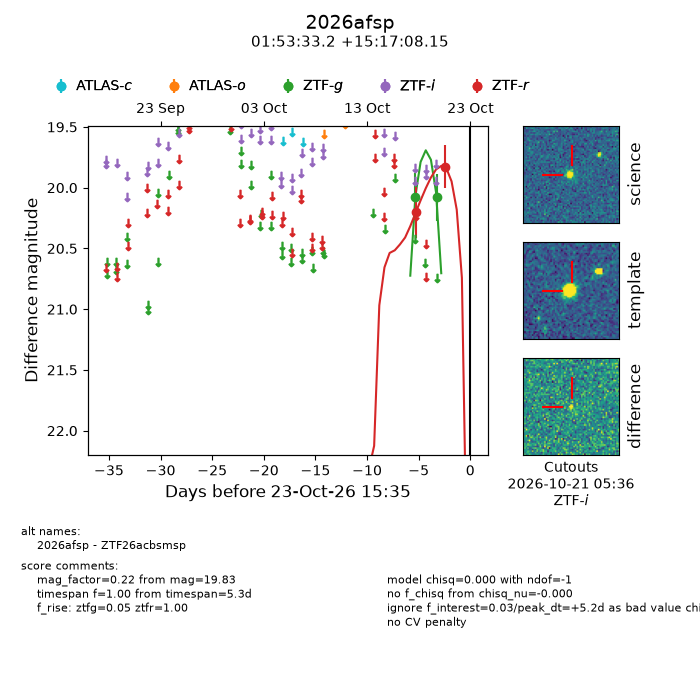
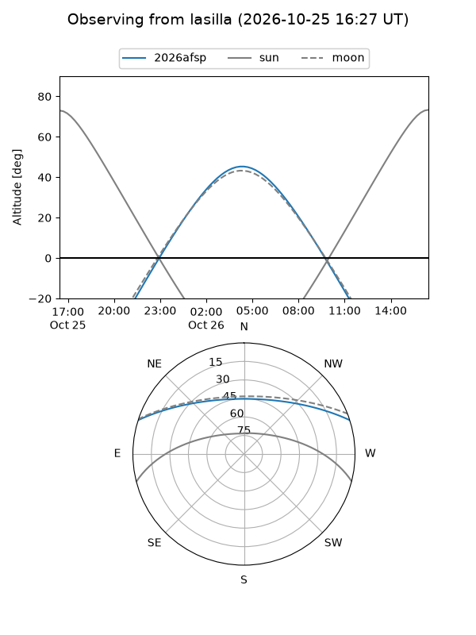
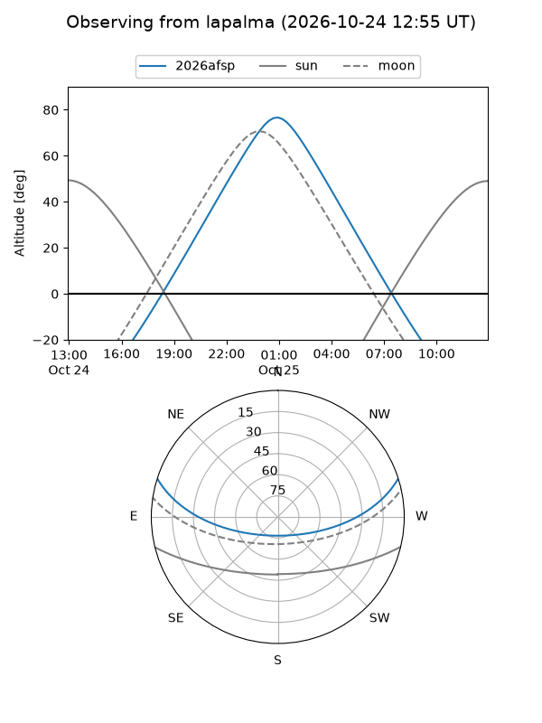
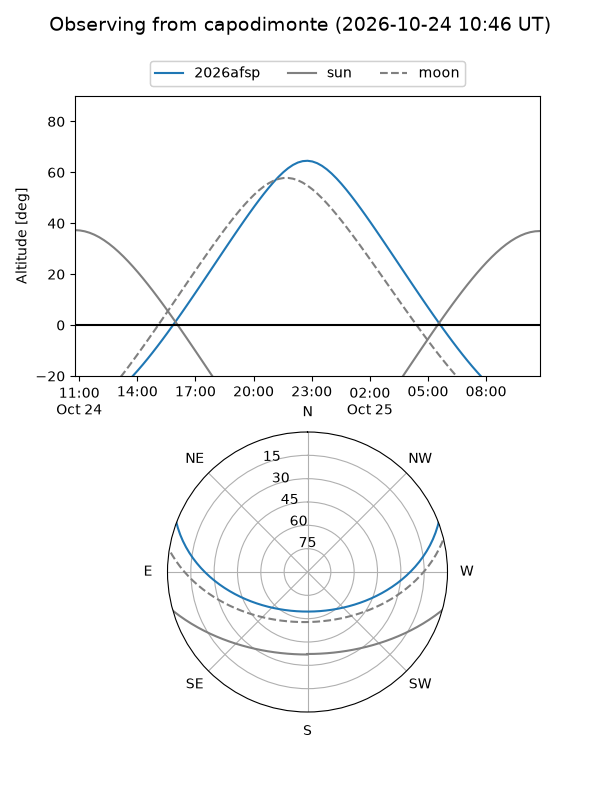
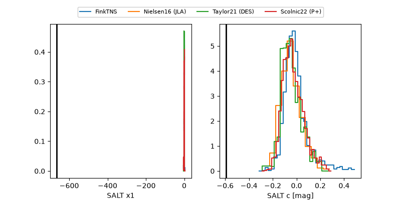

2026afsp
Target 2026afsp at 2026-10-23 15:37
Aliases and brokers:
FINK-ZTF: ztf.fink-portal.org/ZTF26acbsmsp
Lasair-ZTF: lasair-ztf.lsst.ac.uk/objects/ZTF26acbsmsp
ALeRCE-ZTF: alerce.online/object/ZTF26acbsmsp
YSE-PZ: ziggy.ucolick.org/yse/transient_detail/2026afsp
TNS name: wis-tns.org/object/2026afsp
Direct TNS query: direct search
alt names
ZTF26acbsmsp (ztf,fink_ztf)
2026afsp (tns,yse)
Coordinates:
equatorial (ra, dec) = 28.3884,+15.28560
equatorial (HMS+DMS) = 01:53:33.22,+15:17:08.15
galactic (l, b) = (144.3485,-44.98754)
Flags:
peak dt: +5.2
Photometry:
last ztfg=20.08, ztfr=19.83
2 ztfg, 2 ztfr detections
Lightcurve

Visibility



Additional plots
